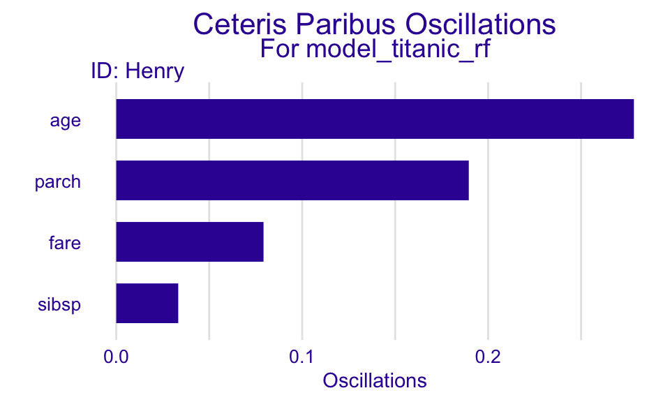
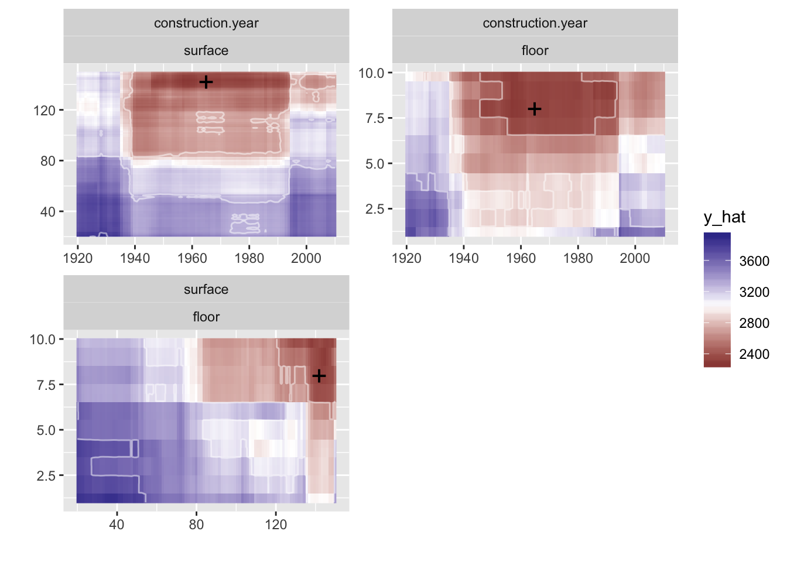
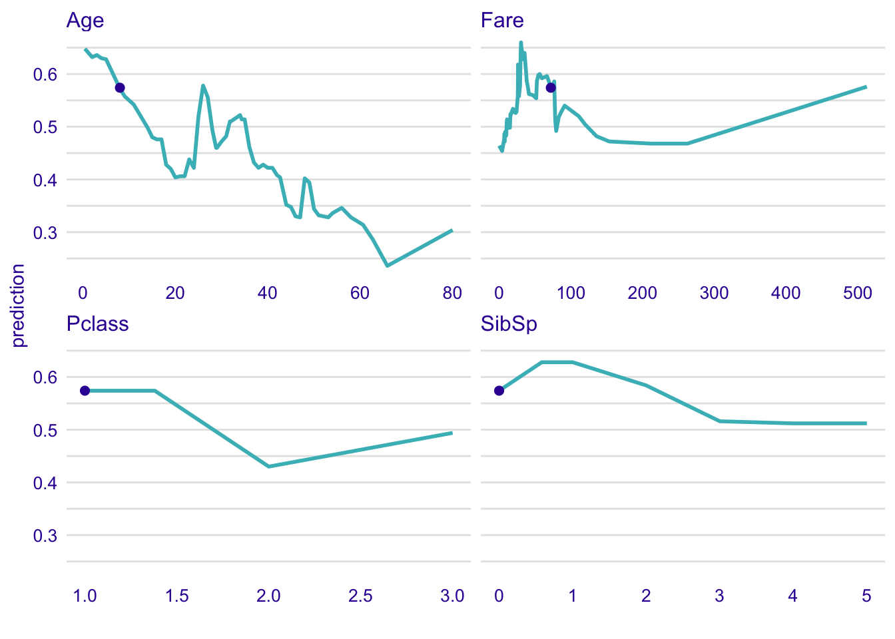

Chapter 8 What-If analysis with the Ceteris Paribus Principle
In this section we introduce tools based on Ceteris Paribus principle. The main goal for these tools is to help understand how changes in model input affect changes in model output.
Presented explainers are linked with the second law introduced in Section 1.2, i.e. law for prediction’s speculations. This is why these explainers are also known as What-If model analysis or Individual Conditional EXpectations (Goldstein et al. 2015). It turns out that it is easier to understand how blacx-box model is working if we can play with it by changing variable by variable.
8.1 Introduction
Ceteris paribus is a Latin phrase meaning “other things held constant” or “all else unchanged”. Using this principle we examine input variable per variable separatly, asumming that effects of all other variables are unchanged. See Figure 8.1

Figure 8.1: (fig:modelResponseCurveLine) A) Model response surface. Ceteris Paribus profiles marked with black curves helps to understand the curvature of the model response by updating only a single variable. B) CP profiles are individual conditional model responses
Similar to the LIME method introduced in the section 7, Ceteris Paribus profiles examine curvature of a model response function. The difference between these two methods that LIME approximates the model curvature with a simpler white-box model that is easier to present. Usually the LIME model is sparse, thus our attention may be limited to smaller number of dimensions. In contrary, the CP plots show conditional model response for every variable. In the last subsection we discuss pros and cons of this approach.
8.2 Intuition
8.3 Method
8.3.1 1D profiles
Let \(f_{M}(x): \mathcal R^{d} \rightarrow \mathcal R\) denote a predictive model, i.e. function that takes \(d\) dimensional vector and calculate numerical score. Symbol \(x \in \mathcal R^d\) refers to a point in the feature space. We use subscript \(x_i\) to refer to a different data points and superscript \(x^j\) to refer to specific dimensions. Additionally, let \(x^{-j}\) denote all coordinates except \(j\)-th and let \(x|^j=z\) denote a data point \(x^*\) with all coordinates equal to \(x\) except coordinate \(j\) equal to value \(z\). I.e. \(\forall_{i \neq {j}} x^i = x^{*,i}\) and \(x^j = z\). In other words \(x|^j=z\) denote a \(x\) with \(j\)th coordinate changed to \(z\).
Now we can define uni-dimensional Ceteris Paribus Profile for model \(f\), variable \(j\) and point \(x\) as
\[ CP^{f, j, x}(z) := f(x|^j = z). \] I.e. CP profile is a model response obtained for observations created based on \(x\) with coordinate \(j\) changed and all other coordinates kept unchanged.
A natural way to visualise CP profiles is to use a profile plot as in Figure 8.2.
Figure 8.2 shows an example of Ceteris Paribus profile. The black dot stands for prediction for a single observation. Grey line show how the model response would change if in this single observation coordinate hours will be changed to selected value. One thing that we can read is that the model response is not smooth and there is some variability along the profile. Second thing is that for this particular observation the model response would drop significantly if the variable hours will be higher than 45.

Figure 8.2: (fig:HRCPHiredHours) Ceteris Paribus profile for Random Forest model that assess the probability of being fired in call center as a function of average number of working hours
Since in the example dataset we are struggling with model for three classes, one can plot CP profiles for each class in the same panel. See an example in the Figure 8.3.

Figure 8.3: (fig:HRCPAllHours) Ceteris Paribus profiles for three classess predicted by the Random Forest model as a function of average number of working hours
Usually model input consist many variables, then it is beneficial to show more variables at the same time. The easiest way to do so is to plot consecutive variables on separate panels. See an example in Figure 8.4.

Figure 8.4: (fig:HRCPFiredAll) Ceteris Paribus profiles for all continuous variables
8.3.2 Profile oscillations
Visual examination of variables is insightful, but for large number of variables we end up with large number of panels, most of which are flat. This is why we want to asses variable importance and show only profiles for important variables. The advantage of CP profiles is that they lead to a very natural and intuitive way of assessing the variable importance for a single prediction. The intuition is: the more important variable the larger are changes along the CP profile. If variable is not important then model response will barely change. If variable is important the CP profile change a lot for different values of a variable.
Let’s write it down in a more formal way.
Let \(vip^{CP}_j(x)\) denotes variable importance calculated based on CP profiles in point \(x\) for variable \(j\).
\[ vip^{CP}_j(x) = \int_{-\inf}^{inf} |CP^{f,j,x}(z) - f(x)| dz \]
So it’s an absolute deviation from \(f(x)\). Note that one can consider different modification of this coefficient:
- Deviations can be calculated not as a distance from \(f(x)\) but from average \(\bar CP^{f,j,x}(z)\).
- The integral may be weighted based on the density of variable \(x^j\).
- Instead of absolute deviations one may use root from average squares.
TODO: we need to verify which approach is better. Anna Kozak is working on this
The straightforward estimator for \(vip^{CP}_j(x)\) is
\[ \widehat{ vip^{CP}_j(x)} = \frac 1n \sum_{i=1}^n |CP^{f,j,x}(x_i) - f(x)|. \]
Figure 8.5 shows the idea behind measuring oscillations. The larger the highlighted area the more important is the variable.

Figure 8.5: (fig:CPVIPprofiles) CP oscillations are average deviations between CP profiles and the model response
Figure 8.6 summarizes variable oscillations. Such visuals help to quickly grasp how large are model oscillations around a specific point.

Figure 8.6: (fig:CPVIP1) Variable importance plots calculated for Ceteris Paribus profiles for observation ID: 1001
NOTE
Variable importance for single prediction may be very different than variable importance for the full model.
For example, consider a model \[ f(x_1, x_2) = x_1 * x_2 \] where variables \(x_1\) and \(x_2\) takes values in \([0,1]\).
From the global perspective both variables are equally important.
But local variable importance is very different. Around point \(x = (0, 1)\) the importance of \(x_1\) is much larger than \(x_2\). This is because profile for \(f(z, 1)\) have larger oscillations than \(f(0, z)\).
8.3.3 2D profiles
The definition of ceteris paribus profiles given in section 8.3.1 may be easily extended to two and more variables. Also definition of CP oscillations 8.3.2 have straight forward generalization for larger number of dimensions. Such generalisations are usefull when model is non additive. Presence of pairwise interactions may be detected with 2D Ceteris Paribus plots.
Let’s define two-dimensional Ceteris Paribus Profile for model \(f\), variables \(j\) and \(k\) and point \(x\) as
\[ CP^{f, (j,k), x}(z_1, z_2) := f(x|^{(j,k)} = (z_1,z_2)). \] I.e. CP profile is a model response obtained for observations created based on \(x\) with \(j\) and \(k\) coordinates changed to \((z_1, z_2)\) and all other coordinates kept unchanged.
A natural way to visualise 2D CP profiles is to use a level plot as in Figure 8.7.

Figure 8.7: (fig:CP2Dsurflor) Ceteris Paribus plot for a pair of variales. Black cross marks coordinated for the observation of interest. Presented model estimates price of an appartment
If number of variables is small or moderate thein it is possible to present all pairs of variables. See an example in Figure 8.8.

Figure 8.8: (fig:CP2Dall) Ceteris Paribus plot for all pairs of variales.
8.4 Local model fidelity
Ceteris Paribus profiles are also a useful tool to validate local model fidelity. It may happen that global performance of the model is good, while for some points the local fit is very bad. Local fidelity helps to understand how good is the model fit around point of interest.
How does it work?
The idea behind fidelity plots is to select some number of points from the validation dataset that are closes to the point of interest. It’s a similar approach as in k nearest neighbours. Then for these neighbours we may plot Ceteris Paribus Profiles and check how stable they are.
Also, if we know true taget values for points from the validation dataset we may plot residuals to show how large are residuals.
An example fidelity plot is presented in Figure 8.9. Black line shows the CP profiles for the point of interest, while grey lines show CP profiles for neihgbors. Red intervals stand for residuals and in this example it looks like residuals for neighbours are all negative. Thus maybe model is biased around the point of interest.

Figure 8.9: (fig:CPfidelity1) Local fidelity plots. Black line shows the CP profile for the point of interest. Grey lines show CP profiles for nearest neighbors. Red intervals correspond to residuals. Each red interval starts in a model prediction for a selected neighbor and ends in its true value of target variable.
This observation may be confirmed by plots that compare distribution of all residuals against distribution of residuals for neighbors.
See Figure 8.10 for an example. Here residuals for neighbors are shifted towards highest values. This suggests that the model response is biased around the observation of interest.
TODO: diagnostic score: average quantaile of neighbours.

Figure 8.10: (fig:CPfidelityBoxplot) Distribution of residuals for whole validation data (grey boxplot) and for selected closes 15 neighbors (red boxplot).
8.5 Example
8.6 Pros and cons
Ceteris Paribus principle gives a uniform and extendable approach to model exploration. Below we summarize key strengths and weaknesses of this approach.
Pros
- Graphical representation of Ceteris Paribus profile is easy to understand.
- Ceteris Paribus profiles are compact and it is easy to fit many models or many variables in a small space.
- Ceteris Paribus profiles helps to understand how model response would change and how stable it is
- Oscillations calculated for CP profiles helps to select the most important variables.
- 2D Ceteris Paribus profiles help to identify pairwise interactions between variables.
Cons
- If variables are correlated (like surface and number of rooms) then the ‘everything else kept unchanged’ approach leads to unrealistic settings.
- Interactions between variables are not visible in 1D plots.
- This tool is not suited for very wide data, like hundreds or thousands of variables.
- Visualization of categorical variables is non trivial.
8.7 Code snippets for R
In this section we present key features of the ceterisParibus package for R (Biecek 2018b). This package covers all features presented in this chapter. It is available on CRAN and GitHub. Find more examples at the website of this package https://pbiecek.github.io/ceterisParibus/.
A very interesting tool for moedl explorartion with similar principle is implemented in the condvis package (O’Connell, Hurley, and Domijan 2017).
Model preparation
In this section we will present examples based on the apartments dataset. See section TODO for more details.
## m2.price construction.year surface floor no.rooms district
## 1 5897 1953 25 3 1 Srodmiescie
## 2 1818 1992 143 9 5 Bielany
## 3 3643 1937 56 1 2 Praga
## 4 3517 1995 93 7 3 Ochota
## 5 3013 1992 144 6 5 Mokotow
## 6 5795 1926 61 6 2 SrodmiescieThe problem here is to predict average price for square meter for an apartment. Let’s build a random forest model with randomForest package (Breiman et al. 2018).
library("randomForest")
rf_model <- randomForest(m2.price ~ construction.year + surface + floor +
no.rooms, data = apartments)
rf_model##
## Call:
## randomForest(formula = m2.price ~ construction.year + surface + floor + no.rooms, data = apartments)
## Type of random forest: regression
## Number of trees: 500
## No. of variables tried at each split: 1
##
## Mean of squared residuals: 485330.8
## % Var explained: 40.9Model exploration with ceterisParibus package is performed in four steps.
1. Create an explainer - wrapper around model and validation data.
Since all other functions work in a model agnostic fashion, first we need to define a wrapper around the model. Here we are using the explain() function from DALEX package (Biecek 2018c).
library("DALEX")
explainer_rf <- explain(rf_model,
data = apartmentsTest, y = apartmentsTest$m2.price)
explainer_rf## Model label: randomForest
## Model class: randomForest.formula,randomForest
## Data head :
## m2.price construction.year surface floor no.rooms district
## 1001 4644 1976 131 3 5 Srodmiescie
## 1002 3082 1978 112 9 4 Mokotow2. Define point of interest.
Certeris Paribus profiles explore model around a single point.
new_apartment <- data.frame(construction.year = 1965, no.rooms = 5, surface = 142, floor = 8)
new_apartment## construction.year no.rooms surface floor
## 1 1965 5 142 8## 1
## 2341.3673. Calculate CP profiles
The ceteris_paribus() function calculates CP profiles for selected model around selected observation.
By default CP profiles are calculated for all numerical variables. Use the variables argument to select subset of interesting variables.
The result from ceteris_paribus()function is a data frame with model predictions for modified points around the point of interest.
library("ceterisParibus")
cp_rf <- ceteris_paribus(explainer_rf, new_apartment,
variables = c("construction.year", "floor"))
cp_rf## Top profiles :
## construction.year no.rooms surface floor _yhat_ _vname_
## 1 1920 5 142 8 3102.043 construction.year
## 1.1 1921 5 142 8 3132.637 construction.year
## 1.2 1922 5 142 8 3118.195 construction.year
## 1.3 1923 5 142 8 3090.137 construction.year
## 1.4 1923 5 142 8 3090.137 construction.year
## 1.5 1924 5 142 8 3101.309 construction.year
## _ids_ _label_
## 1 1 randomForest
## 1.1 1 randomForest
## 1.2 1 randomForest
## 1.3 1 randomForest
## 1.4 1 randomForest
## 1.5 1 randomForest
##
##
## Top observations:
## construction.year no.rooms surface floor _yhat_ _label_
## 1 1965 5 142 8 2341.367 randomForest4. Plot CP profiles.
Generic plot() function plot CP profiles. It returns a ggplot2 object that can be polished if needed. Use additional arguments of this function to select colors and sizes for elements visible in the plot.

One of very useful features of ceterisParibus explainers is that profiles for two or more models may be superimposed in a single plot. This helps in model comparisons.
Let’s create a linear model for this dataset and repeat steps 1-3 for the lm model.
lm_model <- lm(m2.price ~ construction.year + surface + floor +
no.rooms, data = apartments)
explainer_lm <- explain(lm_model,
data = apartmentsTest, y = apartmentsTest$m2.price)
cp_lm <- ceteris_paribus(explainer_lm, new_apartment,
variables = c("construction.year", "floor"))Now we can use function plot() to compare both models in a single chart. Additional argument color = "_label_" set color as a key for model.

Oscillations
The calculate_oscillations() function calculates oscillations for CP profiles.
cp_rf_all <- ceteris_paribus(explainer_rf, new_apartment)
co_rf_all <- calculate_oscillations(cp_rf_all)
co_rf_all## _vname_ _ids_ oscillations
## 2 surface 1 610.6147
## 4 no.rooms 1 439.6145
## 3 floor 1 320.3130
## 1 construction.year 1 243.06782D Ceteris Paribus profiles
And the what_if_2d() function calculates 2D CP profiles.
wi_rf_2d <- what_if_2d(explainer_rf, observation = new_apartment,
selected_variables = c("surface","floor", "construction.year"))
plot(wi_rf_2d, split_ncol = 2)
References
Goldstein, Alex, Adam Kapelner, Justin Bleich, and Emil Pitkin. 2015. “Peeking Inside the Black Box: Visualizing Statistical Learning with Plots of Individual Conditional Expectation.” Journal of Computational and Graphical Statistics 24 (1): 44–65. https://doi.org/10.1080/10618600.2014.907095.
Biecek, Przemyslaw. 2018b. CeterisParibus: Ceteris Paribus Profiles. https://pbiecek.github.io/ceterisParibus/.
O’Connell, Mark, Catherine Hurley, and Katarina Domijan. 2017. “Conditional Visualization for Statistical Models: An Introduction to the Condvis Package in R.” Journal of Statistical Software, Articles 81 (5): 1–20. https://doi.org/10.18637/jss.v081.i05.
Breiman, Leo, Adele Cutler, Andy Liaw, and Matthew Wiener. 2018. RandomForest: Breiman and Cutler’s Random Forests for Classification and Regression. https://CRAN.R-project.org/package=randomForest.
Biecek, Przemyslaw. 2018c. DALEX: Descriptive mAchine Learning Explanations. https://pbiecek.github.io/DALEX/.